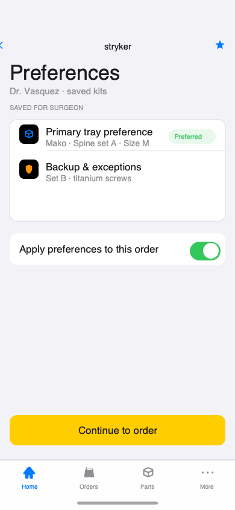
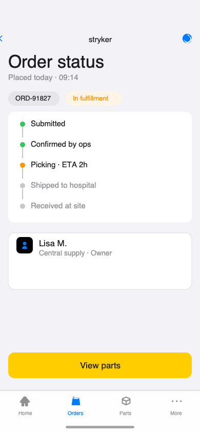
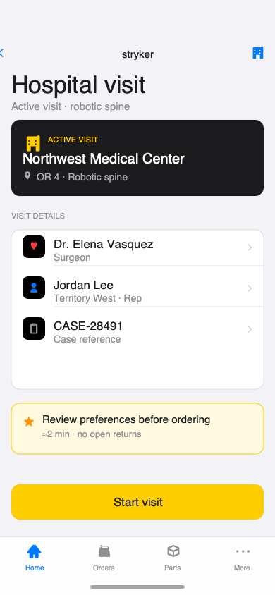

Product Stryker (medical devices)
Field representatives visit hospitals, work with surgeons, and manage the full part lifecycle, order, track, deliver, record surgical use, and return unused inventory, with preferences that persist across visits.
Reps were juggling orders, serials, and returns across calls and spreadsheets during hospital visits. I mapped the full part lifecycle, designed one mobile thread from arrive through close, and paired wireframes with clinical ops and engineering. Serial-level tracking and surgeon preferences landed in one auditable flow.




Sally · US UX · hi-fi iPhone renders v1 · portrait ticker pending spacing sign-off
Field representatives visit hospitals, work with surgeons, and manage the full part lifecycle, order, track, deliver, record surgical use, and return unused inventory, with preferences that persist across visits.
Reps, surgeons, and hospital ops each held partial context. Orders, parts, deliveries, usage, and returns sat in different tools, so the next action was ambiguous under time pressure.
I mapped the full part lifecycle and designed one rep-primary mobile thread from arrive through close. Serial-level tracking and surgeon preferences surface at the beats where reps act, with a wireframe spec at every gallery step for clinical ops and engineering review.
Order, serial, delivery, use, and return states now share one visit context instead of calls and spreadsheets. Reps see which case is active on arrival and carry that context through close loop. That removed the status gaps that forced ops calls mid-visit.
10
Lifecycle beats
Arrive through close loop in one mobile thread, aligned to hospital visit order
1
Serial trace path
Order, part, delivery, use, and return tied to one visit context
↓
Ops calls mid-visit
Directional drop when status lives in-app instead of phone and spreadsheet (client metrics private)
Active hospital, surgeon, and case on one screen.
